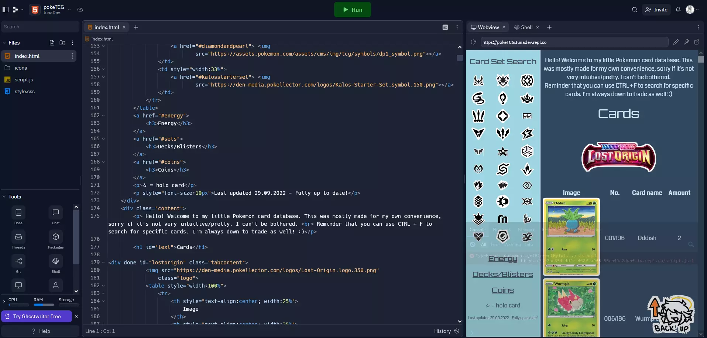
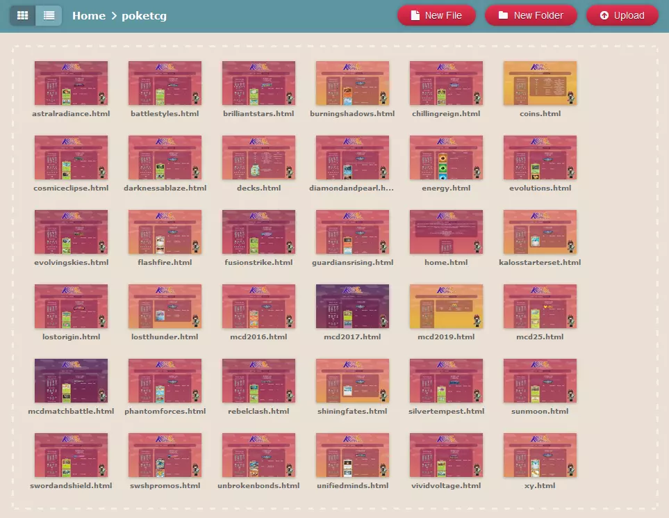
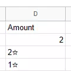
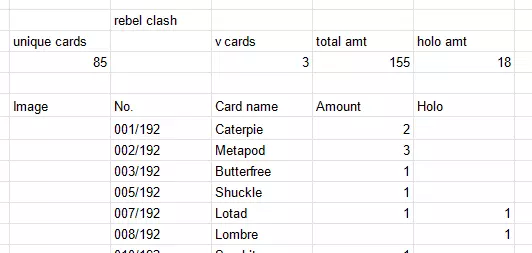
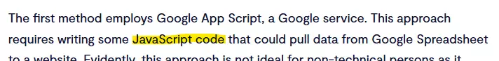

The making of a Pokemon TCG Database and why you shouldn't do it
TL;DR
Kibbi talks about the struggles of coding, how to import HTML tables into Excel and why spending 2000 zl on pieces of paper is a bad idea.
The idea for a database came to me last year. The reason why I even wanted to make one in the first place is because I have over 1000 cards and wanted to keep track of all of them. And also I'm autistic. I used Pokellector, but they don't let you track the number of cards, at least for free. So it seemed convenient to make a simple HTML webpage for it!
Back when I didn't know what Neocities was, I used Replit for website hosting. Big mistake. It was absolutely horrible and I do not recommend it in the slightest. But I managed to make some sort of website on there. It took DAYS to complete it, writing down every single card I own as well as the number of them... And it resulted in the bane of my existence.

Now, at the time, I did not know how to separate code into different files, so the index.html took 5 MINUTES to load, with 12839 lines!! You can tell I wasn't the sharpest tool in the shed. Essentially, the whole website was just a long scrolling list of cards with a navbar overlayed on the left. Each card was a row in a long table. I marked holo cards with a star symbol. The only pro of that was that I knew if I had a card of a certain Pokemon without having to look through every single tab. The cons were that it took 5 minutes to load the code. And it was ugly. Now I don't know about you, but for me that's an instant dealbreaker. So I stopped updating it after September, it was too much work and got annoying really fast.
In the meantime, I attempted to make a spreadsheet database instead, thinking it would be easier. I quickly got bored of that idea after manually putting in 2 cards. Maybe it would've been easier if I could focus on something for longer than 5 minutes.
Like 4 months went by and eventually I decided to make a Neocities. One of my first ideas was to port the database and make it better! Bigger!! ~PRETTIER~!!! FANCIER!!!! It took a lot of courage to open the Replit file again and I started thinking about how to fix the mess I made.
I started with the base for each of the files. To fit with the theme of the website, I separated the main body of the database and the navbar into 2 divs. I made the navbar sticky, so it stays in place as you scroll through the list. I added the icons for each of the sets I owned, which I copy-pasted from the Replit file and separated them by game. I realized most people aren't autistic enough to know the names of 3 generations of Pokemon card sets. I added the links to the energy, sets and coin sections as well. After that I moved on to creating the HTML files for each set.

Now there was a lot of those,,,
I pasted each of the tables from the Replit file into their respective HTML files. After that was finished, I thought that it would be cool to somehow count the amount of total/holos/special cards I have automatically! I love numbers. So, I looked into the options for that.
The best idea was, as previously attempted, a spreadsheet. Except THIS TIME I found out you can IMPORT TABLES INTO GOOGLE SHEETS. This changed EVERYTHING! So, I imported the tables for each set into a spreadsheet using this function:
=IMPORTHTML("[link]";"table";1)
There are 3 parameters you need to fill out in this, the link, the item you want to import and which item you want to import. You paste a link to your website, select whether you want to import a table or list and choose which one by putting in the number of the item. So in my case, I wanted to import the first table of a specific set.

Now, there was a problem. Remember how I used a star to mark holo cards? Well, because it was a symbol, it changed the values in the spreadsheet to strings instead of integers, which made it so that they weren't counted in the =SUM function! So I had to go through every single file, add a new column for holo cards and move the starred numbers to the other column. Unknowingly, this also made a lot of things easier to calculate in the spreadsheet.
You could probably guess the way I counted the total cards. I used the =SUM function and selected the rows with holo and normal cards. I did the same thing for counting holo cards, except I changed the range. Now, counting special cards (V/VSTAR, EX, GX) was a bit trickier. I used the =COUNTIF function for that. Here's an example for the V/VSTAR cards:
=COUNTIF([range];"* V")-COUNTIF([range];"* VSTAR")
To explain, the COUNTIFs are connected by the - symbol, so they check for both values at the same time. The * in "* V" and "* VSTAR" means a wildcard symbol. Wildcards basically can take the form of anything, so the function checks for cards that have the "V" or "VSTAR" ending. The range of the function is the names column.
Last, I used the =COUNTA function to count non-empty spaces in the names column. That way, I had the number of unique cards in each set!

Counting the total of cards in all of the sets was probably the easiest part - just a long =SUM function. With that, the spreadsheet was finished! :)
I looked a way for me to automatically import the spreadsheet data to my site, and there is way to do it!

Oh. Nevermind!
Besides the fact it uses JavaScript, it also imported the data as a table, while I just wanted a list. So I resorted to copy-pasting the data manually. I guess the only drawback of that is that I'll have to manually update the data, but that's OK.
So yeah, that's the database finished! It took a while, but I'm really proud of how it turned out. It also made me realize how much money I've spent on Pokemon cards, which I wish I didn't know :) I hope some of the things here were useful to you in a way, or that you enjoyed wasting your time reading this entry. Cheers!
Link to my database
Link to the spreadsheet
<< Back to blog index